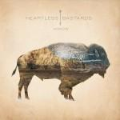
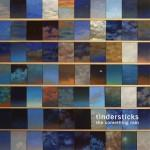

Music Reviews
-

Heartless Bastards Arrow
On their fourth album, their first on Partisan Records, Heartless Bastards aim to salvage the glory of 70s classic and southern rock. On Arrow, the Bastards stake out uncharted territory on what has proved to be their most accessbile album yet.
David Hogg reviews... -
Disappears Pre Language
The Chicago band's third release still employs fuzzed out, big riff songs with a heightened sense of vitriol.
Juan Edgardo Rodríguez champions literacy... -

The Ting Tings Sounds From Nowheresville
Remember The Ting Tings? That annoyingly brash duo who had that annoyingly brash song years ago about girls' names? Well, they're back with a new album. Don't all rush at once to buy it...
Mark Davison questions whether this was worth a four year wait... -

A Place To Bury Strangers Onwards To The Wall
A Place To Bury Strangers return with a short EP. It certainly sounds like APTBS, but fails to live up to the intense energy of their live show or debut record.
Andrew Baer gets disappointed... -
The Men Open Your Heart
Ten plus years after rock n’ roll is saved, (or, revived), New York rock quartet, The Men, save rock, too, (or, revitalize). Are you paying attention, Interscope?
Sean Caldwell reviews... -

Bruce Springsteen Wrecking Ball
Bruce Springsteen's politically charged 17th studio album is here. And I'll spare you the suspense: it's his best album in decades.
Forrest Cardamenis (and Bruce Springsteen) dodge the... -

Earth Angels of Darkness, Demons of Light II
Seventh album from Seattle-based, original doom droners, now a tightly sprung group of musickal magicians. It's a companion to 2011's masterful Angels I, and it's just as good.
David John Wood needs a lie down... -
Memoryhouse The Slideshow Effect
Memoryhouse's debut full-length is an unexpected departure from the luscious texture from their EPs but a more potent walk down memory lane.
Forrest Cardamenis remembers... -

Tindersticks The Something Rain
Tindersticks' ninth album and the band sound the same as ever. And it's full of REALLY long songs...
James McKenna finds out WEATHER it's any good... -

Damien Jurado Maraqopa
Jurado's latest collaboration with producer Richard Swift has one reviewer feeling awfully relieved.
Alan Shulman reviews